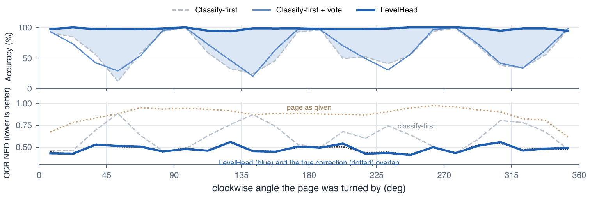

Deskew Before You Classify
LevelHead: training-free page orientation for any model. Level the page first, then let any classifier or VLM vote over the four quarter turns of the level page.

How it works
Any angle splits as θ = 90°·k + s. Rows of text reveal the tilt s and look the same after a quarter turn; the shapes of letters reveal k.

A spectral deskewer reads the tilt modulo 90°. A Hann taper lets it read photographs too.
The frozen backbone sees the level page in its four quarter turns.
Each answer is read at its own offset; a geometric mean cancels class bias.
Accuracy against tilt
Same backbone, same deskewer, same four-view vote; only the order of the two steps differs. Pick a backbone.
Order and vote are complementary
Arbitrary-angle sets, averaged per backbone.
A deskewer that reads photographs
Share of images left more than 15° off (lower is better).
Every backbone, seven benchmarks
Average accuracy (%) within 15° over ODB-4, ORB SROIE, SynthDoG, Indic-4, ODB-any, En-12 and Indic-8.
| Backbone | Classify-first | LevelHead | ODB-any |
|---|
Photographs and scans at known angles
Classify-first / + vote / LevelHead. At quarter turns the vote alone suffices; at any angle only levelling closes the gap.
| Backbone | Real5-Rot4 | Real5-RotAny | DISE-any |
|---|---|---|---|
| docTR | 85.8 / 88.8 / 88.5 | 72.6 / 75.7 / 86.1 | 68.7 / 70.9 / 88.2 |
| PP-LCNet | 98.3 / 98.4 / 98.3 | 69.9 / 75.0 / 97.0 | 55.1 / 58.4 / 95.7 |
| Swin-T | 82.4 / 89.2 / 89.0 | 66.8 / 77.3 / 89.1 | 63.4 / 77.8 / 92.7 |
| BEiT-B | 86.1 / 90.2 / 90.0 | 68.0 / 76.5 / 87.0 | 72.9 / 81.8 / 88.8 |
What the order changes
One page per difficulty level, drawn where the two orders disagree; both use Qwen3-VL-32B and the same vote.



Quickstart
pip install "levelhead[hf] @ git+https://github.com/beingamanforever/LevelHead"
from PIL import Image
from levelhead import LevelHead
from levelhead.backbones import HFOrientationClassifier
lh = LevelHead(HFOrientationClassifier())
pred = lh.predict(Image.open("scan.jpg"))
print(pred.angle, pred.posterior)
lh.correct(Image.open("scan.jpg")).save("upright.jpg")